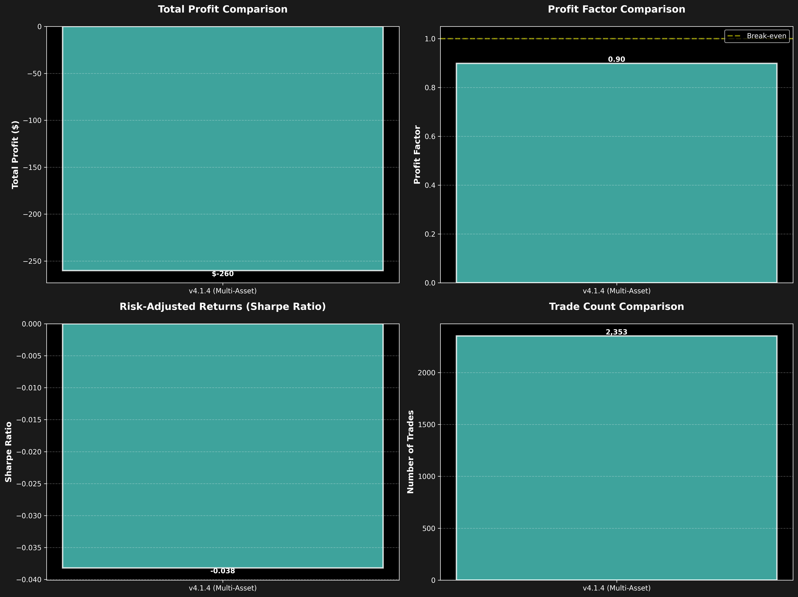
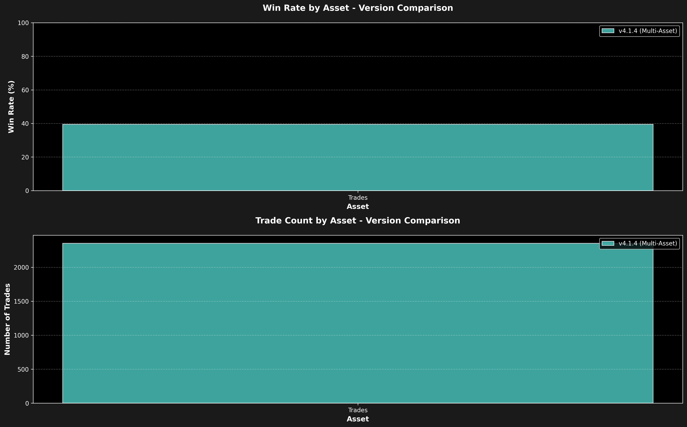
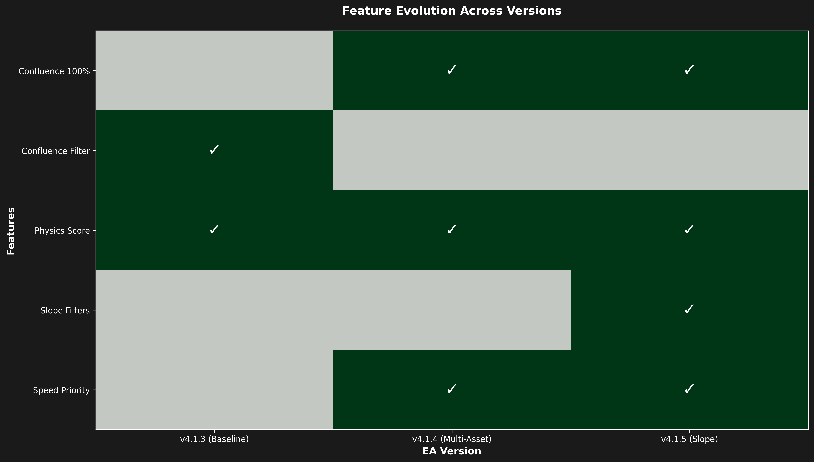

🚀 EA Version Comparison Dashboard
Comprehensive Analysis: v4.1.3 (Baseline) → v4.1.4 (Multi-Asset) → v4.1.5 (Slope)
v4.1.4 (Multi-Asset)
Speed-prioritized weights + Q3 threshold
Total Trades:
2,353
Win Rate:
39.4%
Total Profit:
$-260.28
Profit Factor:
0.90
📊 Performance Comparison


🌍 Asset-Level Analysis

🔧 Feature Evolution

Version Highlights:
- v4.1.3 (Baseline): Original correlation-based weights from single-dataset analysis
- v4.1.4 (Multi-Asset): Speed-prioritized weights (28%/25%) + Physics Score Q3 threshold (55.0) + Confluence 100% filter
- v4.1.5 (Slope): Added directional momentum confirmation via slope analysis (3-bar linear slopes for Speed, Acceleration, Momentum, Jerk)
🎯 Key Insights:
- Trade Count Evolution: Expect progressive filtering (v4.1.3 → v4.1.4 → v4.1.5) as we add more strict filters
- Win Rate Optimization: Each version should show improved win rate due to better signal quality filtering
- Slope Impact (v4.1.5): Directional momentum filters should catch "late" entries where metrics are declining
- Quality vs Quantity: Fewer trades with higher win rates = better risk-adjusted returns
📋 Next Steps
Analysis Workflow:
- Complete v4.1.4 backtests on all assets (NAS100, US30, EURUSD, USDJPY, AUDUSD)
- Compare v4.1.4 against v4.1.3 baseline to validate multi-asset optimizations
- Run v4.1.5 backtests on same datasets to measure slope filter effectiveness
- Analyze CSV data to optimize slope thresholds (MinSpeedSlope, MinAccelerationSlope)
- Create slope effectiveness report showing correlation between slopes and wins